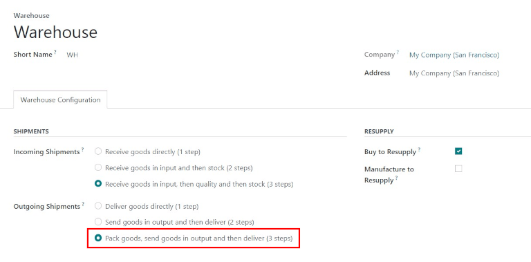
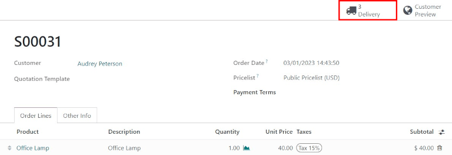
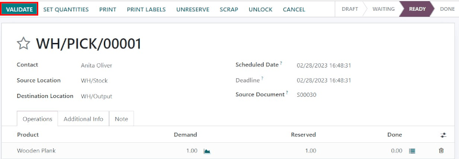
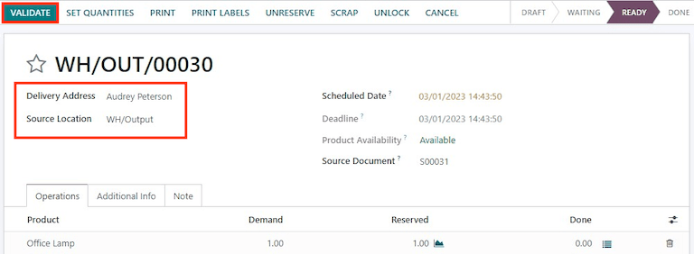

Process deliveries in three steps¶
Some companies process large amounts of deliveries every day, many of which include multiple products or require special packaging. To make this efficient, a packing step is needed before shipping out products. For this, Odoo has a three step process for delivering goods.
In the default three-step delivery process, products that are part of a delivery order are picked in the warehouse according to their removal strategy, and brought to a packing zone. After the items have been packed into the different shipments in the packing zone, they are brought to an output location before being shipped. These steps can be modified if they do not fit the needs of the business.
Configuration¶
Odoo is configured by default to receive and deliver goods in one step, so the settings need to be changed in order to utilize three step deliveries. First, make sure the Multi-Step Routes option is enabled in . Note that activating Multi-Step Routes will also activate Storage Locations.

Next, the warehouse needs to be configured for three step deliveries. To do this, go to , and click on the warehouse to edit. Then, select Pack goods, send goods in output and then deliver (3 steps) for Outgoing Shipments.
Activating three-step receipts and deliveries creates two new internal locations: a Packing Zone (WH/Packing Zone), and Output (WH/Output). To rename these locations, go to , click on the Location to change, and update the name.
Deliver in three steps (pick + pack + ship)¶
Create a sales order¶
To create a new quote, navigate to , which reveals a blank quotation form. On the blank quotation form, select a Customer, add a storable Product, and click Confirm.
A Delivery smart button appears in the top right of the quotation form. Clicking it shows the picking order, packing order, and the delivery order associated with the sales order.
Process a picking¶
The picking, packing, and delivery orders will be created once the sales order is confirmed. To view these transfers, go to .

The status of the picking will be Ready, since the product must be picked from stock before it can be packed. The status of the packing order and delivery order will both be Waiting Another Operation, since the packing and delivery cannot happen until the picking is completed. The status of the delivery order will only change to Ready when the packing has been marked Done.
The receipt can also be found in the Inventory application. In the Overview dashboard, click the 1 To Process smart button in the Pick kanban card.

Click on the picking to process. If the product is in stock, Odoo will automatically reserve the product. Click Validate to mark the picking as done, and complete the transfer to the Packing Zone. Then the packing order will be ready. Since the documents are linked, the products which have been previously picked are automatically reserved on the packing order.
Process a packing¶
The packing order will be ready to be processed once the picking is completed, and can be found in the application Overview dashboard. Click the 1 To Process smart button in the Pack kanban card.

Click on the packing order associated with the sales order, then click on Validate to complete the packing.

Once the packing order is validated, the product leaves the WH/Packing Zone location and moves to the WH/Output location. Then, the status of the document will change to Done.
Process a delivery¶
The delivery order will be ready to be processed once the packing is completed, and can be found in the application Overview dashboard. Click the 1 To Process smart button in the Delivery Orders kanban card.

Click on the delivery order associated with the sales order, then click on Validate to complete the move.
Once the delivery order is validated, the product leaves the WH/Output location and moves to the Partners/Customers location. Then, the status of the document will change to Done.